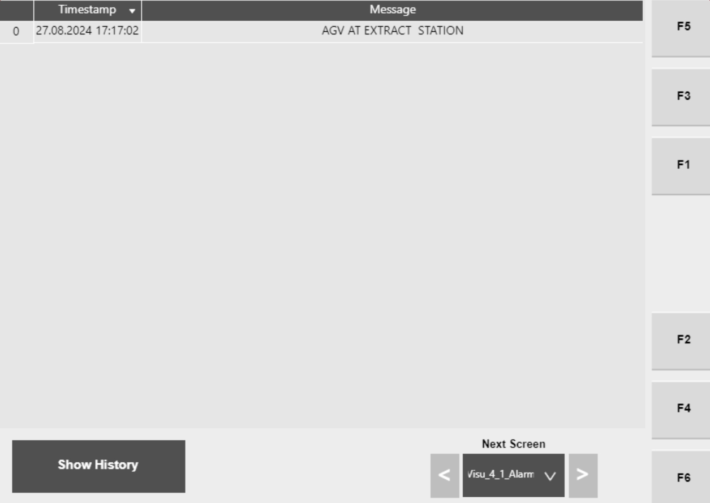

| Procedure ID | proc_check_hospital_hmi_alarms_list_timestamp_v1 |
|---|---|
| Title | Check Hospital HMI Alarms List and Timestamp for Active Alarms |
| Procedure Type | diagnostic |
| Primary Role | operator |
| Support Safe | Yes |
| Capability Tags | tipper_station_fault |
| Access Surface | hospital_hmi |
| Audience Roles | operator |
| Failure Pattern Tags | None |
| Validation Status | needs_sme_review |
| Merge Status | source_finalized |
Use the Hospital HMI Alarms screen to identify active alarm entries and their timestamps. Then match the Alarm Text/ID to the manual’s Alarms and Corrective Actions table to determine the documented Cause and Corrective Action for the specific alarm.
When the system is showing an alarm/fault condition at the Hospital station and you need to identify the specific active alarm text/ID and its timestamp so the correct documented corrective action can be applied.

Responsible role: operator
Instruction:
On the Hospital HMI / lane UI, navigate to the Alarms screen (Hospital HMI Alarms Screen, Figure 4-42).
Expected result:
The Hospital HMI Alarms screen is displayed and shows a list of alarms along with a time stamp.
Stop or Escalate If:
Responsible role: operator
Instruction:
On the Hospital HMI Alarms screen, verify that the alarms list rows are present and that each alarm entry includes a time stamp.
Expected result:
The screen shows active alarm entries and a time stamp for each entry.
Responsible role: operator
Instruction:
For the alarm(s) currently relevant to the issue, record the Alarm Text and the associated ID from the alarms list entry.
Expected result:
You have the Alarm Text and ID for the active alarm entry/entries that correspond to the observed system condition.
Responsible role: operator
Instruction:
Using Table 4-23 (Alarms and Corrective Actions), match the recorded Alarm Text/ID to the corresponding row to identify the documented Cause and Corrective Action.
Expected result:
The recorded Alarm Text/ID matches a specific Table 4-23 entry that provides Cause and Corrective Action.
Stop or Escalate If: